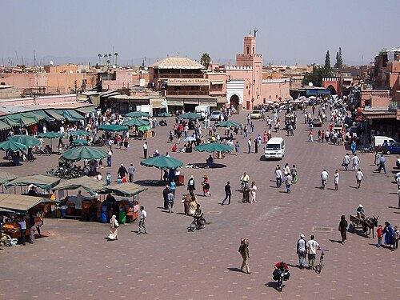
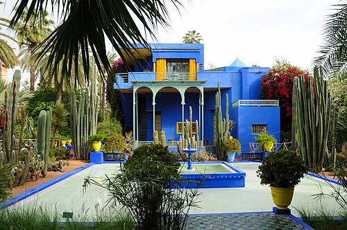
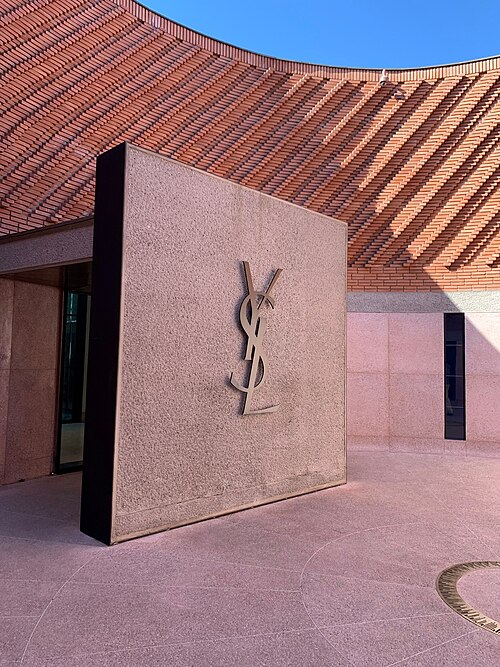

This map shows 16 of the most-searched sights in Marrakech as photo spots, ranked by how often people search for them: Jemaa el-Fnaa, Majorelle Garden, Menara Gardens, Bahia Palace and El Badi Palace lead the list. Every spot has a pin on the subject and a phone icon showing where to stand, with tips for shooting it on your phone: which lens to use, how to frame it, a settings tip and the best time of day. Directions and Navigate buttons take you to the standing point on foot or by public transport. 3 spots are free to view; the full map is for members.
The 3 free photo spots
1Jemaa el-Fnaa

Jemaa el-Fnaa is the main square of Marrakech. It sits in the medina, the old city, and is used by locals and visitors alike. It photographs well because there is always something going on: stalls, juice sellers, musicians and performers by day, and food stalls lit up once it gets dark. The city was founded in 1070, and the square began as an open market space next to a fortress. For centuries it hosted festivals, parades and other public events. One explanation of its name points to a mosque begun by the Saadian sultan Ahmad al-Mansur (ruled 1578-1603), which was never finished and fell into ruin. In 2008 the square was included in UNESCO's List of Intangible Cultural Heritage of Humanity, which recognises its living traditions rather than its buildings. For a view from above, the rooftop terrace of Le Grand Balcon du Café Glacier is a well-known elevated viewpoint, where you can see the square with the stalls and crowds below. A major renovation of the square began in May 2025, so the scene may look different from older photos. At street level, ask before photographing people. Photo-prop monkeys and snake charmers charge per shot.
Where it is: In the medina (old city) of Marrakech, where it forms the main square of the old town.
Shooting it on your phone
Lens: Start with the default lens (1x) for a general view across the square. Switch to ultra-wide (0.5x) if you want more of the crowd and stalls in the frame. Use telephoto (2x-5x, depending on your phone) to pick out single stalls, performers or lit-up food stands without having to push through the crowd or lean over a terrace edge.
Where to stand: Stand on Le Grand Balcon du Café Glacier (rooftop terrace of the café, reached through the ground-floor café). A wide, elevated view across the whole square with the Koutoubia minaret behind it, showing the stalls and crowds below.
Framing: Turn on gridlines and keep the phone level so the buildings do not lean. From the terrace, if the Koutoubia minaret is in view, place it on one of the upper grid lines, with the busy square filling the lower two-thirds. For a second angle, Café de France also looks directly over the action on the square and suits the busy evening scene. At street level you can take close scenes of performers and food stalls, but ask permission before photographing people.
Settings tip: Tap on the brightest part of the sky or the minaret, then pull the exposure slider down a little so the sunset colours are not washed out. After dark, use night mode and brace your elbows on the rail or your body to keep the phone still. Live Photos can capture the movement of the crowd.
Best time: Sunset, and arrive early because the terrace fills up. The light fades and the food stalls light up, so you can take both daytime and evening shots from the same area.
2Majorelle Garden

Majorelle Garden is a one-hectare botanical and artist's garden in Marrakech, known for its bold cobalt blue. The French painter Jacques Majorelle began it in 1923 and worked on it for almost forty years. He used the deep blue, now called Majorelle Blue, extensively in the garden and its buildings. The Cubist villa was designed by the architect Paul Sinoir in the 1930s. In the 1980s Yves Saint Laurent and Pierre Bergé rescued the neglected garden and restored it. Today the villa houses the Berber Museum, and the garden is known for its cacti, fountains and birdlife. It attracts more than 700,000 visitors a year.
The classic photo is from the northern edge of the central lily pond, looking at the blue villa. Papyrus stems frame both sides, blue ceramic pots sit in the foreground, and the villa is reflected in the water. The reflection is clearest when the water is calm, which is usually only at opening time. Two good alternatives are the water basin with its lilies and the pavilion by Bill Willis behind the palms, and a head-on view of the villa's front with cacti in the foreground. Photography inside the museums is not allowed, so keep your phone for the grounds.
Where it is: Majorelle Garden is in Marrakech, Morocco. It began in 1923 as a plot on the edge of a palm grove, and the Yves Saint Laurent Museum now stands nearby.
Shooting it on your phone
Lens: Use the default lens (1x) for the villa and its reflection, as it keeps the scene natural. Switch to ultra-wide (0.5x) for the lily basin and the pavilion, so the water and palms fit together. Use telephoto (2x or more) to pick out the blue pots, cacti or a single papyrus frame.
Where to stand: Stand about 160 m south of the subject, at the phone icon on the map, and face north. Stand at Jardin Majorelle, on the northern edge of the central lily pond, facing the blue villa across the water. From here you see the villa reflected in still water, with papyrus on both sides and blue ceramic pots in the foreground.
Framing: Turn on gridlines and place the villa's base near the lower third, so the water takes up the bottom of the frame and the reflection mirrors the building. Hold the phone low, just above the pots, to make them a strong foreground. For a second shot, move to the basin to photograph the lilies and the Bill Willis pavilion, or to the cross-path just before the villa for a head-on view with cacti in front.
Settings tip: Tap the villa to focus, then slide the exposure down a touch so the blue stays rich rather than washed out. Take a few frames in a row, as the reflection changes when the water ripples. Use portrait mode only for close-ups of pots or plants.
Best time: At opening (8am), before the water is disturbed and other visitors arrive. Opening hours vary by season, so check the official site before you go.
8Yves Saint Laurent Museum in Marrakesh

The Yves Saint Laurent Museum is a modern building in earthy tones, made of cubes and curves and covered in a lacework of bricks that recalls woven fabric. It is built from terracotta, concrete and terrazzo, and the bricks were made locally from Moroccan earth. That texture is what makes it photograph well: the pattern looks good in a wide shot and even better up close. The museum opened to the public on 19 October 2017 and covers 4,000 square metres. It was designed by Studio KO, and in 2018 it won Wallpaper magazine's award for best new public building. It stands on Yves Saint Laurent Street, close to Majorelle Garden. The most popular picture is the close frame of the entrance with the large YSL lettering and the façade behind it. Other visitors usually want the same shot, so there can be a queue. Take it early or near closing time if you can. For a calmer image, step back to the street for a head-on view of the latticed front, with people posing by the entrance. Le Studio Café offers a quieter view of the architecture from the courtyard, but you may need a ticket to get in. Photography rules inside the grounds can vary, so check on arrival.
Where it is: In Marrakech, on Yves Saint Laurent Street, near Majorelle Garden.
Shooting it on your phone
Lens: Start with the default lens (1x) for the entrance and logo. Use the ultra-wide (0.5x) if you want the whole front of the building from the street. Use the telephoto (2x or more) for close-ups of the brick lattice.
Where to stand: Stand right at the subject (in front of the entrance with the YSL logo). A close frame of the museum's entrance and its large YSL lettering, with the building's façade behind. If the queue is long, the street (Rue Yves Saint Laurent) gives a head-on view of the terracotta front, and Le Studio Café gives a calmer view of the architecture from the courtyard.
Framing: Switch on gridlines and line the lettering up with one of the lines so the logo sits clearly in the frame. Keep the phone level so the vertical lines of the brickwork stay straight. For a wider picture, step back and include the pattern of the façade and any visitors posing in the foreground.
Settings tip: Tap the logo or the brick wall to set focus, then drag the exposure slider down slightly if the light-coloured lettering looks washed out. Use portrait mode only if you are photographing a person in front of the entrance.
Best time: Early morning or near closing time, to avoid the queue at the logo.
13 more spots for members
These spots are on the map as grey numbered pins. Where to stand, the phone tips, photos and directions for them come with Explorer membership.
- 3Menara Gardens · members
- 4Bahia Palace · members
- 5El Badi Palace · members
- 6Saadian Tombs · members
- 7Kutubiyya Mosque · members
- 9Ben Youssef Madrasa · members
- 10Ben Youssef Mosque · members
- 11Marrakech Museum · members
- 12Bab Agnaou · members
- 13Bab Doukkala · members
- 14Dar Si Said · members
- 15Almoravid Qubba · members
- 16Mouassine Fountain · members
Get every spot with Explorer membership
Explorer opens every spot on every map in the library: where to stand, how to frame it on your phone and how to get there, plus the Xdatrys Maps app with maps saved on your phone for use without signal. $9.99 a month or $59.99 a year; cancel any time.
Join Explorer Compare free and Explorer
Not ready to join?
Get Pocket Lens, our free daily smartphone travel photography newsletter.
Free, and you can unsubscribe at any time. If the form does not show, sign up on our newsletter page.
Questions
What are the top photo spots in Marrakech?
The first three on this map are Jemaa el-Fnaa, Majorelle Garden and Menara Gardens. They are ranked by how often people search for them. The full map has 16.
Where should I stand to photograph Jemaa el-Fnaa?
Stand on Le Grand Balcon du Café Glacier (rooftop terrace of the café, reached through the ground-floor café). Start with the default lens (1x) for a general view across the square.
When is the best time to photograph Majorelle Garden?
At opening (8am), before the water is disturbed and other visitors arrive. Opening hours vary by season, so check the official site before you go.
How do I get to YSL Museum?
No Underground, tram or railway stop is listed for this spot.
Credits
Map data © OpenStreetMap contributors (ODbL); base map built with Protomaps from OpenStreetMap data. Photos from Wikimedia Commons, credited under each photo with their licence. Background reading for the free spots: Jemaa el-Fnaa, Majorelle Garden, Yves Saint Laurent Museum in Marrakesh (Wikipedia, CC BY-SA). Access rules and opening times change: check before you go.